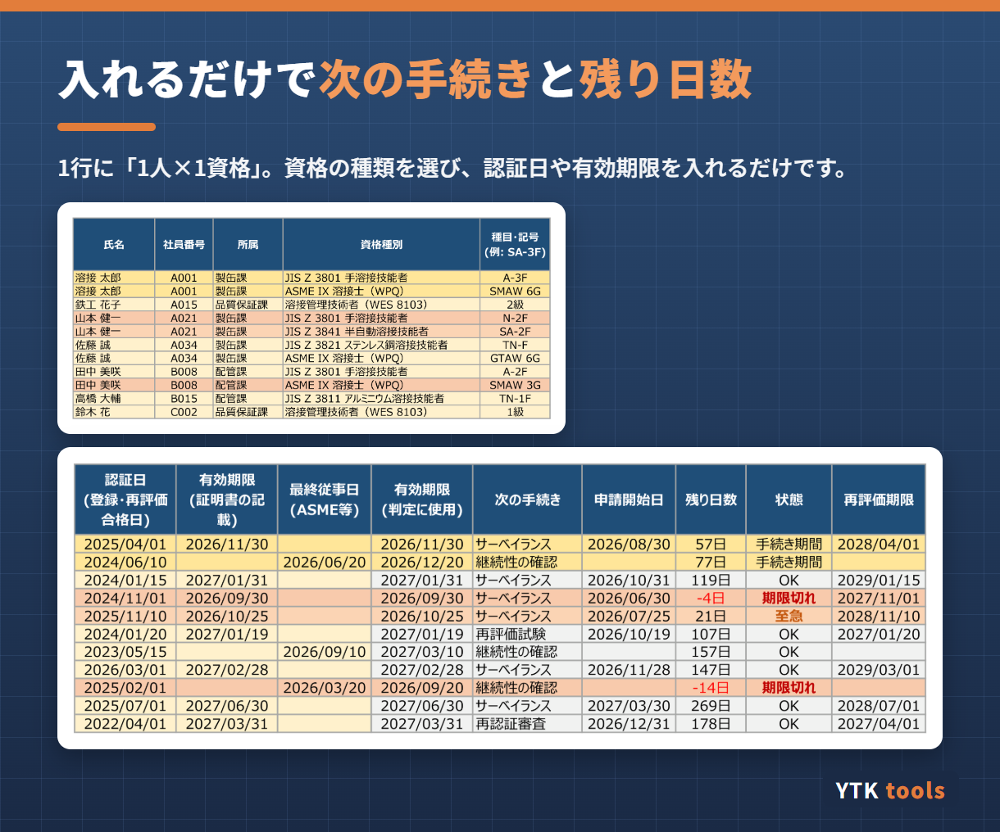
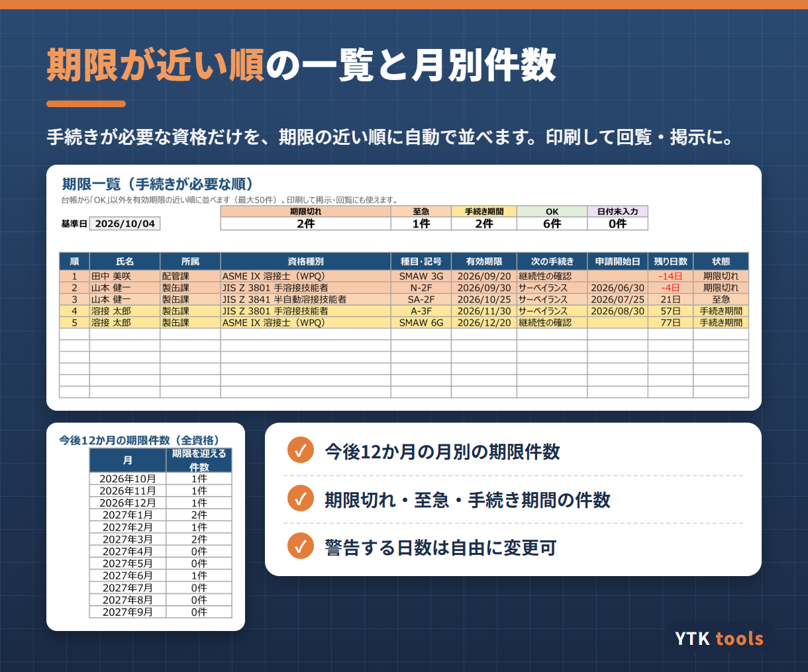

こんな場面で使えます
- 溶接工の資格の期限を、紙や手書きの一覧で管理している
- サーベイランスの申請を忘れて、資格を失効させてしまったことがある
- ASMEの溶接士の「6か月の継続性」を確認する仕組みがない
- 監査や審査のときに、資格の一覧をすぐ出せるようにしたい
主な機能
- 1行に「1人×1資格」を入力（最大300行）
- 資格の種類を選ぶと、有効期限・次の手続き・申請開始日・残り日数・再評価の期限を自動計算
- 状態を「期限切れ（赤）／至急（オレンジ）／手続き期間（黄）／OK」で色分け
- ASME IX の溶接士は、最終従事日から6か月の継続性の期限で判定
- 手続きが必要な資格を期限の近い順に並べた一覧（印刷して回覧・掲示に）
- 今後12か月の月別の期限件数
- 「至急」「手続き期間」とする日数や、資格の種類・周期は自由に変更・追加できます（社内資格やAW検定なども登録可）


仕様・動作環境
| 収録している資格 | JIS Z 3801（手溶接）・JIS Z 3841（半自動溶接）・JIS Z 3821（ステンレス鋼）・JIS Z 3811（アルミニウム）の溶接技能者、溶接管理技術者（WES 8103）、ASME Section IX 溶接士（WPQ）。社内資格なども追加できます |
|---|---|
| 形式 | Excelファイル（.xlsx）。マクロ不使用で、数式だけで動きます |
| 動作環境 | Windows版 Microsoft Excel（2016以降／Microsoft 365） |
| お届け | ご購入後すぐにExcelファイルをダウンロードできます |
| 価格 | 1,000円（税込）・買い切り |
| 作成者 | YTK tools（溶接管理技術者 WES 特別級が作成） |
資格の周期・手続きの初期値は2026年10月時点の各協会の案内をもとにしています。実際の申請期間・必要書類は、各協会の最新の案内でご確認ください。
使い方や背景をまとめた記事：溶接資格 期限管理台帳の解説記事（note）